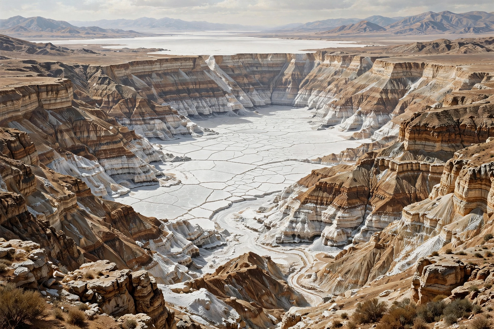

The Messinian salinity crisis (also called the Messinian event) was a geological event during the Messinian age of the Miocene epoch (from 5.96 to 5.33 million years ago) in which the Mediterranean Sea went into a cycle of partial or complete desiccation. Tectonic uplift at the Strait of Gibraltar cut the Mediterranean off from the Atlantic Ocean; evaporation then exceeded inflow, sea level fell dramatically, and enormous deposits of evaporite minerals — salt and gypsum more than a kilometre thick in places — accumulated on the basin floor. The crisis ended with the Zanclean flood, one of the most dramatic refilling events in Earth history.
| Messinian salinity crisis | |
| Period | 5.96 – 5.33 million years ago (Messinian, Miocene) |
|---|---|
| Cause | Tectonic restriction of Atlantic gateways at Gibraltar |
| Salt deposited | approx. 1 million km³ of evaporites |
| Sea-level fall | Estimates from several hundred metres to over 1,500 m |
| Ended by | Zanclean flood (5.33 Ma), reopening of the Strait of Gibraltar |

During the crisis the Mediterranean shrank to a series of deep, hypersaline lakes below sea level.
Evidence of the crisis emerged from deep-sea drilling: in 1970 the drilling vessel Glomar Challenger recovered cores from beneath the Mediterranean floor containing gypsum, anhydrite and halite — minerals that form when seawater evaporates. Seismic surveys revealed a widespread reflective layer (the "M reflector") of evaporites buried under the basin, and deep, now-buried canyons cut by the Rhône and the Nile, showing that rivers once flowed down to a much lower sea level. The Nile canyon at Aswan lies far below present sea level, and a buried canyon beneath Cairo is comparable in scale to the Grand Canyon.
Africa's convergence with Eurasia progressively restricted the marine gateways through what are now Spain and Morocco. When connection with the Atlantic was severed or reduced to a trickle, evaporation — which today removes more water from the Mediterranean than rivers and rain replace — drew the sea down. The basin likely became a chain of deep brine lakes, in which salt precipitated in thicknesses locally exceeding 2 km; roughly a million cubic kilometres of salt were locked away, measurably lowering the salinity of the world ocean. Rivers cut huge canyons into the exposed margins, land bridges allowed faunal exchange between Africa and Europe, and normal marine life in the Mediterranean was wiped out.
At 5.33 million years ago, Atlantic water breached the Gibraltar sill and refilled the basin in the Zanclean flood. Modelling suggests the refilling may have taken only months to a few years at peak flow, with water cascading down a drop of more than a kilometre and discharge vastly exceeding any modern river — possibly the largest flood known in the geological record. The event marks the boundary between the Miocene and Pliocene epochs and restored the Mediterranean to something like its present state.
The crisis is a central case study in how gateway tectonics control ocean circulation and climate, and the Messinian evaporites remain a major target and seal in hydrocarbon exploration. The buried salt also deforms under later sediment loads, producing salt tectonics that complicate the geology of the whole Mediterranean floor.